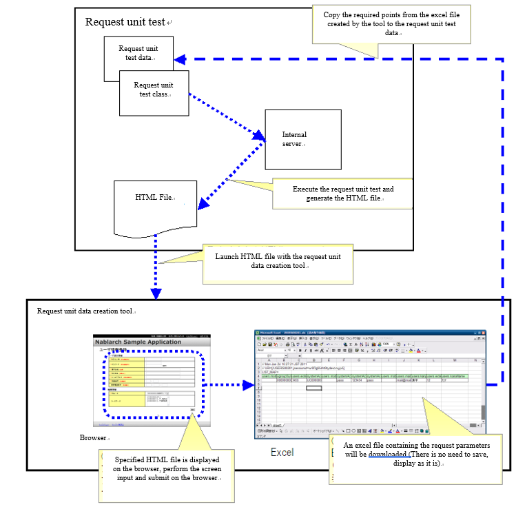

Request Unit Data Creation Tool¶
Summary¶
The keys and values in the request parameters from HTML are required to be created as test data for the request unit test (web application) [*] . If this request parameter is created manually, the name of the request parameter (name attribute in the form) may be copied incorrectly. This possibility is more likely in screens with many parameters such as a registration screen.
To eliminate such manual errors, a tool that can create request parameters for the next screen using HTML generated by the request unit test is provided.
[*] For information on how to write request parameter test data, see How to Execute a Request Unit Test（Especially, Request parameter）.
Features¶
The tool can be used to acquire the request parameters for the next screen in Excel format by operating the HTML generated by the request unit test with a browser. Test data can be created intuitively as if operating on a web application.
How to Use¶
How to use the tool is explained in reference to the following figure.
{kind=link}
Prerequisites¶
- The development environment must have been built according to the development environment build guide.
- See Prerequisites of Request Unit Data Creation Tool Installation Guide.
HTML generation for input¶
Execute the request unit test and generate a HTML file.
Only the data for the request unit test of the initial screen display needs to be prepared manually. Since most initial screen display requests (for example, a simple screen transition from a menu) do not include a request parameter, usually an empty request parameter is required to be created.
Tool launch¶
Right click on the HTML file from Eclipse and launch the tool. See (How from launch from HTML file )
Tip
When this tool is launched on Windows, a command prompt appears, which is a process of the internal server used within the tool.Keep the command prompt running while using this tool.While launching the tool if the server is already been started then the server launch is skipped, hence the second and subsequent tool starts are faster.If the command prompt is accidentally closed, it will automatically start when the tool is launched the next time.
Data entry¶
Since the HTML file is launched in the browser, enter data on the browser screen and execute submit.
Excel download¶
The HTTP request generated by the submit can be downloaded as an Excel file. Since the excel file is not required to be saved locally, it can be launched in Excel or OpenOffice directly from the browser.
Data compilation¶
The downloaded Excel file contains the data for the HTTP request parameters. Copy the data to the test data of the request unit test.